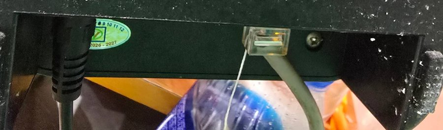

Hướng dẫn cài đặt máy in đơn hàng cho bếp - Quán Jinmi (진미식당)
Cách nhận đơn khách gửi từ QR Menu trên màn hình bếp và in phiếu đơn bằng nút [In].
Người cài đặt làm lần lượt từ trên xuống và đánh dấu vào ô .
Sơ đồ chung
Điện thoại khách Gọi món bằng QR Menu
→
Internet
→
Máy tính bảng/điện thoại ở bếp Màn hình bếp + app RawBT
→
Router wifi của quán (modem / bộ phát wifi)
→
Máy in ZyWell Nối bằng dây mạng (LAN)
Máy in của quán (đã xác nhận qua ảnh)
Nhãn dưới đáy máy in
Hãng · Model
ZyWell ZY-Q822 (máy in hóa đơn giấy in nhiệt)
Khổ giấy
80mm
Cách kết nối
USB + LAN (dây mạng) Không có Bluetooth
Hiện trạng
Mặt sau đã cắm dây nguồn và dây mạng
Quan trọng: Máy in này không có Bluetooth. Vì vậy kết nối theo cách "dây mạng → router wifi → thiết bị Android dùng cùng wifi". Không thấy máy in này trong cài đặt Bluetooth của điện thoại là bình thường.
Chuẩn bị
Máy in ZyWell (đã bật nguồn, đã lắp giấy in nhiệt 80mm)
Dây mạng của máy in đã cắm vào router wifi của quán
1 máy tính bảng hoặc điện thoại Android đặt ở bếp (iPhone/iPad xem phần "Cách khác" ở trang cuối)
Mã PIN 6 số của màn hình bếp (nhận từ người phụ trách QR Menu)
Địa chỉ màn hình bếp: https://qrmenuasia.com/kitchen/?shop=jinmi
Bước 1 · Tìm địa chỉ IP của máy in — khoảng 3 phút
Để thiết bị Android tìm thấy máy in, cần có địa chỉ IP của máy in (dãy số giống như số nhà trong mạng, ví dụ: 192.168.1.100). Máy in sẽ tự in dãy số này ra giấy.

Mặt sau máy in: dây đen bên trái = nguồn, dây xám ở giữa = dây mạng
Lần theo dây mạng màu xám ở mặt sau máy in, xem đầu bên kia có cắm vào router wifi (modem) không. Nếu nó cắm thẳng vào máy tính tiền (POS), hãy báo cho người cài đặt.
Tắt nguồn máy in.
Giữ nút FEED (đẩy giấy) ở mặt trước máy in, rồi bật nguồn. Khi nghe tiếng bíp hoặc giấy bắt đầu chạy ra thì thả tay khỏi nút.
Trên tờ giấy in ra (phiếu tự kiểm tra), tìm dòng IP Address và ghi vào bên dưới.
IP máy in: Cổng (Port): 9100 (thường là số này)
Trên thiết bị Android, mở Cài đặt → Wifi, bấm vào wifi đang kết nối để xem địa chỉ IP của thiết bị.
IP thiết bị:
So sánh hai số:3 nhóm số đầu của hai địa chỉ IP phải giống nhau.
Ví dụ) Máy in 192.168.1.100 / Thiết bị 192.168.1.25 → giống nhau → sang Bước 2.
Ví dụ) Máy in 192.168.123.100 / Thiết bị 192.168.1.25 → khác nhau → phải đổi IP máy in. Hãy giao cho người cài đặt (cần làm trên máy tính).
Lưu ý: Nếu máy in này đang được máy tính tiền (POS) khác dùng, đừng tự ý đổi IP máy in. Máy tính tiền đó có thể ngừng in. Dùng chung mà không đổi IP thì không sao.
Tên nút FEED tùy model: có thể ghi 'FEED' hoặc ký hiệu '↑'. Nếu không in ra phiếu tự kiểm tra, hãy tắt nguồn rồi thử lại một lần nữa.
Bước 2 · Cài app RawBT trên thiết bị Android — khoảng 5 phút
RawBT là app miễn phí giúp gửi phiếu đơn từ màn hình bếp sang máy in. (Điện thoại của chủ quán Jinmi đã cài sẵn)
Kết nối thiết bị vào cùng wifi của quán với máy in (đã so sánh IP đạt ở Bước 1).
Vào Google Play (CH Play), tìm và cài RawBT. (Đã có thì bỏ qua) — Nếu hiện màn hình trả phí, đừng bấm, hãy đóng lại. Bản miễn phí là đủ.
Mở RawBT và vào Cài đặt (biểu tượng bánh răng).
Chọn Cách kết nối (Connection) là Network / LAN·Wi-Fi (TCP/IP). Không chọn Bluetooth.
Ở ô địa chỉ IP, nhập IP máy in đã ghi ở Bước 1. Ở ô cổng (Port), nhập 9100.
Nếu có mục cài đặt khổ giấy/khổ máy in, chọn 80mm.
Bấm In thử (Test) trong RawBT, xem giấy có chạy ra không. → Nếu có là xong Bước 2.
Nếu làm được đến đây là đã kết nối xong máy in. Chỉ còn chọn "Gửi qua RawBT" trên màn hình bếp.
Tên menu có thể hơi khác tùy phiên bản app (ví dụ: Connection method, Network, Printer IP). Chỉ cần tìm ô có cùng ý nghĩa.
Bước 3 · Cài đặt màn hình bếp và in thử — khoảng 3 phút
Màn hình bếp có thể đổi sang tiếng Việt/tiếng Hàn. Trong ngoặc là tên nút khi màn hình để tiếng Hàn.
Trên Chrome của cùng thiết bị Android, mở qrmenuasia.com/kitchen/?shop=jinmi. (Nếu chọn menu Chrome ⋮ → 'Thêm vào màn hình chính', lần sau có thể mở bằng biểu tượng)
Nhập PIN 6 số rồi bấm Vào(들어가기). Đã vào một lần thì 60 ngày không hỏi lại.
Bấm ▶ Bắt đầu(▶ 시작). Âm báo đơn mới sẽ bật và màn hình không bị tắt.
Bấm ⚙ ở góc trên bên phải để mở Cài đặt máy này(이 기기 설정).
Chọn Máy in(프린터) → Máy in Bluetooth (app RawBT)(블루투스 프린터 (RawBT 앱)).
Tên có chữ 'Bluetooth' nhưng thực ra nghĩa là gửi qua app RawBT. RawBT sẽ gửi sang máy in bằng cách LAN đã cài ở Bước 2, nên máy in này cũng chọn mục này.
Khổ giấy(용지 폭) → 80mm.
Ở ô Tên máy(기기 이름), ghi tên như 'Bếp 1' (không bắt buộc).
Bấm In thử(시험 인쇄). Lần đầu có thể hỏi "Mở bằng RawBT?" → chọn Luôn cho phép. Máy in ra phiếu đơn 'thử' là thành công.
(Không bắt buộc) Bật Tự in đơn mới(새 주문 자동 인쇄). Tùy thiết bị, có thể không tự in được. Khi đó hãy bấm In trên thẻ đơn.
Bấm Đóng(닫기).
Kiểm tra cài đặt xong: Gửi thử 1 đơn thật bằng QR ở bàn khách, rồi bấm In đơn hiện trên màn hình bếp, xem trên giấy có số bàn, món và số lượng không.
Cách dùng hằng ngày
Khi bắt đầu bán, bật nguồn máy in, mở màn hình bếp trên thiết bị ở bếp và bấm ▶ Bắt đầu.
Khi khách gọi món sẽ có tiếng "ting" và thẻ đơn hiện ở cột Đơn mới(새 주문).
Bấm In(인쇄) trên thẻ → phiếu đơn được in ra.
Bắt đầu nấu thì bấm Nhận đơn(접수), ra hết món thì bấm Xong(완료). Bấm nhầm thì bấm Hoàn tác(되돌리기).
Thiết bị ở bếp nên cắm sạc liên tục và không tắt wifi.
Khi không in được, kiểm tra
Triệu chứng
Kiểm tra
Không in ra gì
① Nguồn và giấy của máy in ② Dây mạng máy in có cắm vào router không (đèn bên router có nhấp nháy không) ③ Thiết bị có dùng wifi của quán không (không phải dữ liệu di động) ④ In thử trong RawBT có được không
Hôm qua in được, hôm nay không
Tắt rồi bật lại router có thể làm đổi IP máy in. Làm lại Bước 1 để in IP, rồi sửa IP trong RawBT. (Nếu IP cứ đổi, người cài đặt sẽ đặt IP cố định)
Chữ quá nhỏ hoặc dồn về một bên
Kiểm tra ⚙ trên màn hình bếp, khổ giấy có phải 80mm không
Chỉ ra giấy trắng
Lắp giấy in nhiệt bị ngược mặt (mặt in là mặt dùng móng tay cào lên thì đen)
Màn hình bếp hiện 'Mất kết nối'
Kiểm tra internet của thiết bị. Sẽ tự kết nối lại.
Không nhận được đơn
Nếu trên đầu màn hình hiện thông báo “Quán đang TẮT nhận đơn online”, hãy nhờ người phụ trách QR Menu bật lại
Cách khác · Khi dùng iPad/PC
RawBT chỉ dành cho Android. Với iPad và máy tính Windows, vào ⚙ trên màn hình bếp → Máy in, chọn In qua trình duyệt(브라우저 인쇄), rồi chọn máy in trong cửa sổ in như in tài liệu thông thường. Máy tính Windows cần cài driver máy in ZyWell (USB hoặc LAN) trước, nên cần người cài đặt làm giúp. Nên dùng cách Android.
Ghi chép cài đặt
Ngày cài đặt: Người cài đặt:
IP máy in: Thiết bị ở bếp:
Không ghi mã PIN vào tờ giấy này. · Tài liệu: QR Menu · Hướng dẫn cài đặt máy in bếp quán Jinmi (ZyWell ZY-Q822)